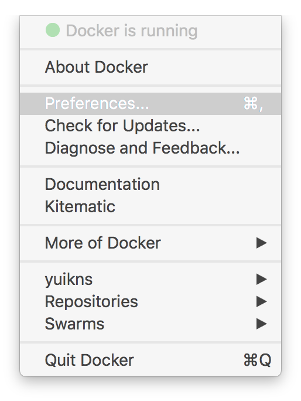
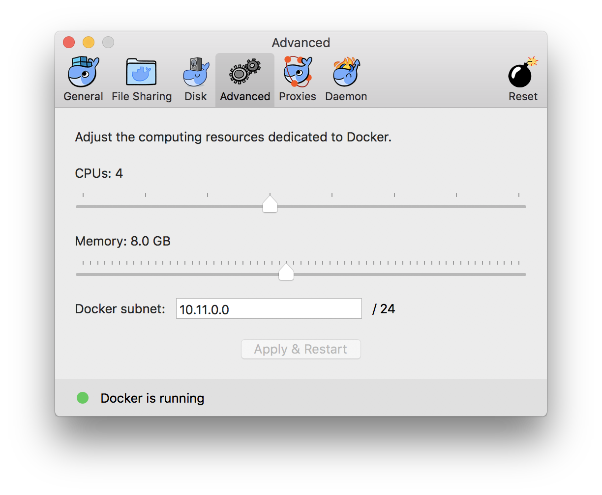

Currently, there are at least two approaches to running Docker services on macOS.
1. Option One: Docker.app
We recommend this installation approach.
You can visit the official website to download Docker Desktop and installation instructions. Select and download a proper version of docker image and drag it to your "Applications" folder to install Docker software. After installation, you can click the Docker icon in the toolbar and set the maximum memory to 4G-8G, as recommended.


Docker.app requires sudo access, and the container data are stored at $HOME/Library/Containers/com.docker.docker.
2. Option Two: Homebrew + VirtualBox + Docker
However, here is an alternative solution.
First of all, you should make sure you have already installed HomeBrew. Secondly, you are supposed to make sure your brew is up-to-date.
brew update # update brew repository
brew upgrade # update all packages for brew
brew doctor # check your brew status
Finally, you can install VirtualBox and Docker by using the following commands:
brew install Caskroom/cask/virtualbox
brew install docker-machine
brew install docker
To keep the Docker service active, we can use brew's service manager
$ brew services start docker-machine
==> Successfully started `docker-machine` (label: homebrew.mxcl.docker-machine)
Check the status:
$ brew services list
Name Status User Plist
docker-machine started name /Users/name/Library/LaunchAgents/homebrew.mxcl.docker-machine.plist
Create a default instance using the following command:
docker-machine create --driver virtualbox --virtualbox-memory 8192 default
Please refer to this link for detailed instructions.
Each time you create a new terminal window, you need to execute the following command before you use any docker commands docker *:
eval $(docker-machine env default)
This command appends some environment variables to your current sessions.
FAQ
Q: Can not connect to Docker
Error Message:
$ docker ps -a
Cannot connect to the Docker daemon at unix:///var/run/docker.sock. Is the docker daemon running?
Please make sure you have already started your session.
Q: Start docker-machine Failed, Can Not Get IP Address
The default manager conflicts with vpn AnyConnect. Please disconnect your AnyConnect VPN before starting the Docker server. Whether Docker is compatible with GlobalProtect VPN has not been tested yet.
Q: Invalid Active Developer Path
xcrun: error: invalid active developer path (/Library/Developer/CommandLineTools), missing xcrun at: /Library/Developer/CommandLineTools/usr/bin/xcrun
Error: Failure while executing: git config --local --replace-all homebrew.analyticsmessage true
try xcode-select --install and then brew update, brew upgrade, and brew doctor again
Q: Where are the data for the images and hard disks?
They are in $HOME/.docker